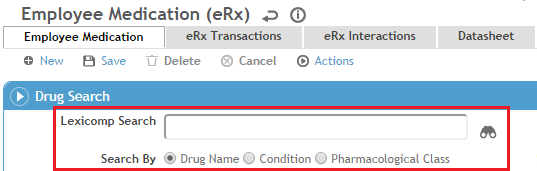
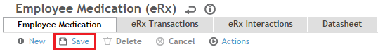
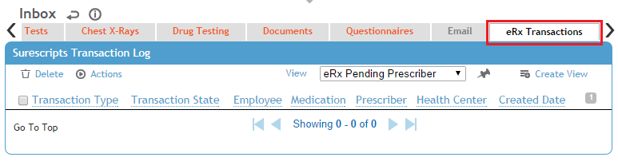
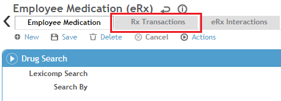
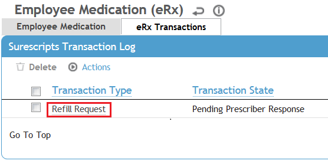
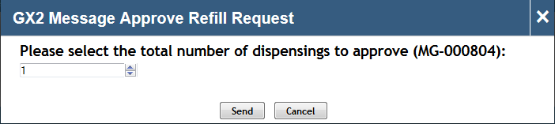
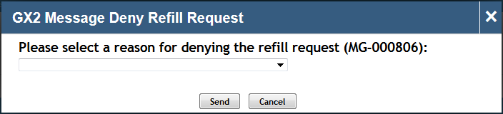
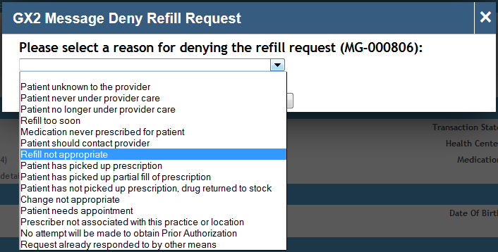
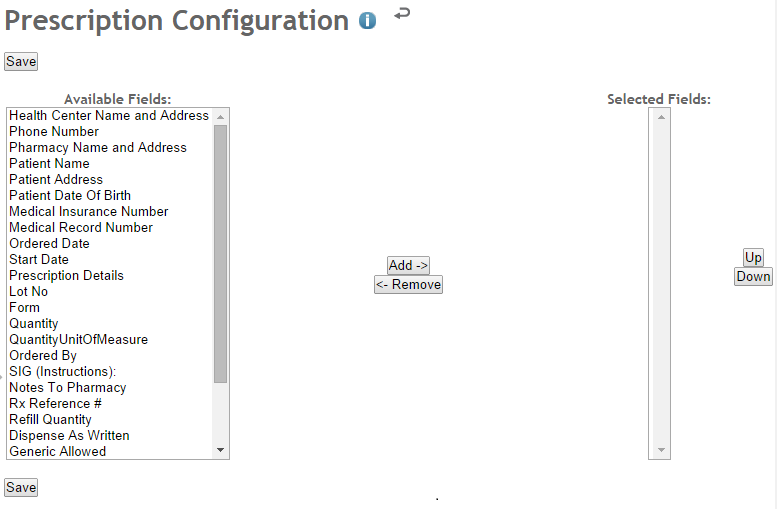

ePrescribers can perform the tasks described in this section.
Prescribing a new employee medication (New Rx) electronically:
The eRx Employee Medication layout allows the ePrescriber to prescribe employee medications electronically (eRx).
Note: If a previously created medication record (with the medication for the employee) already exists, you can open that record and use the 'Copy for New Prescription' action to copy the details to the new record and save time.
To prescribe a new employee medication electronically:
On an Employee Medication layout, click New to create a new Employee Medication record.
Use the Lexicomp Search to search for and select the desired drug.

Based on your selection, the Medication, Medication Strength, and Medication Form fields will be populated automatically. Note: The selected drug must have a Drug Type of Rx, Rx - OTC, or Rx - CS (and the ePrescriber must be registered to ePrescribe the type) for it to be prescribable. Drugs that have a Drug Type of Indeterminate are effectively drug concepts and do not have a medication strength or form associated with them, therefore they cannot be prescribed. Indeterminate drugs are available for selection primarily for historical purposes. For example, a patient may have taken a particular drug in the past but is not actively taking it at the moment. In that case, the medication strength and form may not be known or may not be relevant.
Fill in the following required fields:
SIG (Instructions)
Quantity
Quantity Units of Measure (typically the same value as Medication Form)
Refill Quantity
Pharmacy
Optionally, fill in the Notes To Pharmacy section. Important: This is for instructions to the pharmacist or pharmacy and should not contain any instructions for the patient. This is not to be confused with the Notes field, which is used for storing Cority-specific notes about the employee medication.
Click Save.

If an interaction exists, a popup is displayed indicating that the interaction must be overridden before the record can be saved. In that event, the ePrescriber must navigate to the eRx Interactions tab to address the interaction. If there are no interactions, the record is saved.
From the Actions menu, select Prescribe Electronically.
If any required information is missing, a popup is displayed identifying that. If all of the required fields are filled in, a Summary eRx popup is displayed showing all of the pertinent prescription information. Note: The information on the popup is all that will be sent to the pharmacy. Information on the form that is not present on the popup will not be sent.
If the eRx summary information is correct, click Send to transmit the prescription to the pharmacy electronically. If not, click Cancel to go back to the Employee Medication layout.
If the medication is a controlled substance, you will be notified that the ePrescription needs to be digitally signed. Follow the instructions on the screen to navigate to EPCS Gold, digitally sign the ePrescription, and return to the eRx Employee Medication record.
The ePrescription will be sent.
Surescripts does not support ePrescription for over-the-counter drugs. Prescription information for over-the-counter drugs can be entered into Cority, but over-the-counter drugs cannot be electronically prescribed. These drugs do not require prescriptions to be obtained.
Viewing ePrescription Transaction Log Messages
There are two locations for viewing and monitoring ePrescription transaction log messages—one for viewing all transactions and messages pertaining to a particular ePrescriber and one for viewing messages pertaining to a specific employee’s prescriptions and medication records.
To view the transactions and messages pertaining to a particular ePrescriber:
Navigate to Occupational Health > Inbox.
Click the eRx Transactions tab.

Note: The Inbox eRx Transactions tab displays all of the eRx transactions that were initiated by or involve the ePrescriber (for example, a transaction would appear in the list if the prescriber got married and either the prescriber or an ePrescription administrator changed the prescriber’s name in the system). From the Inbox eRx Transactions tab, the ePrescriber will check on the status of eRx transactions, manage refill/renewal requests, and view pending ePrescription messages.
To view transactions pertaining to a specific employee’s prescriptions and medication records:
Open an Employee Medication record.
Click the Rx Transactions tab for messages about prescription activity.

Approving and Denying eRx Refill/Renewal Requests
eRx refill/renewal requests are displayed on the ePrescriber’s Inbox eRx Transactions tab. The ePrescriber can approve or deny the requests using that tab.
To approve a request:
On the Inbox eRx Transactions tab, select the check box next to the transaction that corresponds to the request.

From the Actions menu, select the appropriate action (for example, Approve refill request).
If the pharmacy did not specify the total number of dispensings to be approved, the ePrescriber will be prompted to provide that information.

The total number of dispensings must be greater than 0 and less than 100.
Note: If the pharmacy did specify the number of dispensings, the number will be auto-populated on the dialog box.
Click Send.
If the medication is a controlled substance, you will be notified that the refill/renewal needs to be digitally signed. Follow the instructions on the screen to navigate to EPCS Gold, digitally sign the ePrescription, and return to the eRx Employee Medication record.
The refill/renewal approval will be sent. The original Employee Medication record is end-dated automatically and a new Employee Medication record is created.
To deny a request:
On the Inbox eRx Transactions tab, select the check box next to the transaction that corresponds to the request.
From the Actions menu, select the appropriate action (for example, Deny refill request).
The ePrescriber will be prompted to select a reason for denying the request.

At present, the denial reasons provided are the only ones available.
Click Send.
In some cases, an ePrescriber will want to deny a request and approve a different employee medication for the patient instead. In such cases, the ePrescriber can use the Deny with new prescription to follow action.
To deny a request and approve a new prescription to follow:
On the Inbox eRx Transactions tab, select the check box next to the transaction that corresponds to the request.
From the Actions menu, select Deny with new prescription to follow.
The ePrescriber will be prompted to select a reason for denying the request.

Select a reason and click Select.
A new eRx Employee Medication form is displayed.
Note: The new prescription must be sent to the same pharmacy that made the request. Therefore, the pharmacy field is set to the pharmacy that made the request and greyed out. If the patient or ePrescriber wants the new prescription to be sent to another pharmacy, the ePrescriber should deny the request and manually create a new Employee Medication record with the new pharmacy selected.
Fill out the new eRx Employee Medication form.
Click Save.
The eRx Summary popup appears.
Confirm the details and click Send.
If the medication is a controlled substance, you will be notified that the refill/renewal needs to be digitally signed. Follow the instructions on the screen to navigate to EPCS Gold, digitally sign the ePrescription, and return to the eRx Employee Medication record.
The new ePrescription will be sent. The original Employee Medication record is end-dated automatically.
Important: If you print a prescription for a refill/renewal request, ensure that the Prescription Form Configuration for the health center with which the ePrescriber is registered contains the Rx Reference # field. This field is required by the pharmacy to link the approval and new prescription to the original request.
To configure the Prescription Form:
Navigate to Administration > Look-up Tables.
Search for and select the Health Centers look-up table.
Search for and select the health centerat which the user is registered with Surescripts.
From the Actions menu, select Prescription Form Configuration.
The Prescription Configuration appears.

Move the fields you want included in the printed prescription form, including the Rx Reference # field, to Selected Fields and order them to suit your needs.
Signing eRx Prescriptions and Refills/Renewals
When an ePrescription or ePrescription refill/renewal approval is successfully transmitted (that is, the pharmacy receives it), the record is signed automatically. Once a record is signed, it cannot be edited, except to add an End Date and End Medication Reason. When an ePrescription is in the pending state (that is, it is sent, but the pharmacy has not yet acknowledged receipt), the record is not signed, but it still cannot be edited.
Cancelling eRx Prescriptions and Refills/Renewals
An ePrescriber with the Surescripts Cancel service level can cancel ePrescriptions and refill/renewal responses electronically.
To cancel an ePrescription or refill/renewal response electronically:
Open the eRx Employee Medication record.
From the Actions menu, select Cancel Electronic Prescription.
Note: For employee medications prescribed through pharmacies that do not support electronic cancellation, users will not be able to perform this action.
When this action is performed successfully, a Cancel Request transaction will appear in the Inbox eRx Transactions list and in the eRx Transactions log. The Cancel Request transaction status can either be Pending Pharmacy Response or Completed.
All Cancel Rx Response messages sent to an ePrescriber (a Cority user who has been granted a role that provides access to the Lexicomp and Surescripts modules) will appear in the Inbox eRx Transactions list and in the eRx Transactions log, and have the Cancel Rx Response transaction type.
When selected, a Cancel Rx Response transaction will be displayed using the eRx Prescription Transaction layout (ML-20003102). The approval status and comments from the pharmacy will be displayed in the Transaction Notes field on the layout.
Updating Legacy Employee Medication Records for the Purpose of ePrescribing
Surescripts requires the National Drug Code (NDC) for each prescribed employee medication. The NDC is used to determine which drug is to be dispensed to the patient. Employee Medication records created by users who are not licensed ePrescribers do not contain the NDC code, and therefore cannot be prescribed electronically.
If an employee medication is active and the record is not signed, the record can be updated using the eRx Employee Medication layout so that the employee medication can be prescribed electronically. An ePrescriber can update the record by simply selecting the corresponding drug using the Lexicomp Search.
Lexicomp has a list of NDCs for all prescribable drugs. By selecting the drug using the Lexicomp Search on the eRx Employee Medication layout and then saving the record, the NDC code for the drug becomes attached to the record. After that, the employee medication can be prescribed electronically.
Note: An ePrescriber can update a legacy Employee Medication record using the eRx Employee Medication layout only if the record is unsigned. If the record is signed, the ePrescriber will need to create a new record for the employee medication to be available for ePrescribing.
To update an unsigned legacy Employee Medication record using the eRx Employee Medication layout:
Open the Employee Medication record.
On the eRx Employee Medication layout (which is now open by default if you have ePrescription privileges), use the Lexicomp Search to find the drug.
Select the drug from the search results box.
Note: As mentioned previously, the selected drug must have a Drug Type of Rx or Rx, OTC to be electronically prescribable.
Fill in the required fields (SIG, Dispense Quantity, Quantity Unit of Measure, Refill Quantity, Pharmacy, and Practitioner) as if the employee medication was a new eRx.
Click Save. The record now has the NDC code for the employee medication, and the employee medication can now be prescribed electronically.
From the Actions menu, select Prescribe Electronically.
On the eRx Summary window, click Send.
Not all historical Employee Medication records need to be updated to eRx Employee Medication records. If an employee medication is not going to be ePrescribed, then the corresponding record does not need to be updated (to contain an NDC).
ePrescribing Controlled Substances: Registering with EPCS Gold
Users who will be prescribing controlled substances must first register with EPCS Gold. EPCS Gold is a DrFirst® product that is used by Cority to perform the identity-proofing and record-signing required for prescribing controlled substances electronically.
To register with EPCS Gold:
ePrescription administrator
Navigate to Administrator > Users.
Locate the ePrescriber user, and open the User record.
From the Actions menu select Register User with EPCS Gold.
Note: This action is not on any default User layout. An administrator will have to add it to a custom User layout.
If the user is already registered with EPCS Gold (for example, as part of another organization), the user’s EPCS Status in the 'OH Users' subsection should update to Enrolled or Inactive. In either case, the user does not have perform the steps in the ePrescriber section below and you can skip to the next ePrescription Administrator section.
If the user is not already registered with EPCS Gold, an invitation email will be sent to the email address specified in Cority for the user. When this is the case, continue to the ePrescriber section below.
ePrescriber
Open the EPCS Gold email, click the link, and follow the instructions provided to complete the required identity-proofing (managed by DrFirst and Experian). If necessary, refer to the EPCS Gold registration documentation for assistance.
When the identity-proofing is completed, an access code will be mailed to the address provided during registration.
Once you have received the access code, log into Cority and navigate to Occupational Health > Inbox.
Click the eRx Transactions tab.
From the Actions menu, select Launch EPCS Gold Prescriber Dashboard.
For the precise Prescriber Dashboard steps required, refer to the EPCS Gold documentation.
Once you have completed these steps, the ePrescriber can be granted Controlled Substances access through EPCS Gold.
ePrescription administrator
Navigate to Administrator > Users.
Locate the ePrescriber user, and open the User record.
From the Actions menu, select Get EPCS Gold Registration Status.
Note: This action is not on any default User layout. An administrator will have to add it to a custom User layout.
In the 'OH Users' subsection, the EPCS Status for the ePrescriber should now be up to date.
Once the EPCS Status is either Enrolled or Inactive, from the Actions menu select Launch EPCS Gold Logical Access Dashboard.
Note: This action is not on any default User layout. An administrator will have to add it to a custom User layout.
For the precise EPCS Gold Logical Access Dashboard steps required, refer to the EPCS Gold documentation.
Once the EPCS Status is Active, click the Linked Health Centers tab and use the 'Manage registration with Surescripts' action to add the Controlled Substances service level to the appropriate linked health center.
Once the ePrescriber is registered with EPCS Gold, has an EPCS Gold status of Active, and is registered with the Surescripts Controlled Substances service level at a particular health center, he or she will be able to prescribe controlled substances. For information on registering a user with Surescripts service levels at a health center, refer to ePrescription Administrator Workflows.